POKÉMON ALVORADA / PILOTO LOCAL / 25.10.2026
Coral: a cidade volta a ter a escala de um bairro.
Fachadas próximas, rua junto ao mar, farol visível, escadaria para a praia e controles discretos. A referência é um conceito artístico; as imagens do piloto abaixo são capturas do jogo funcionando.
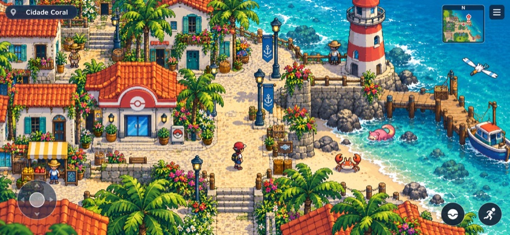
Referência aprovada — conceito, não captura do jogo.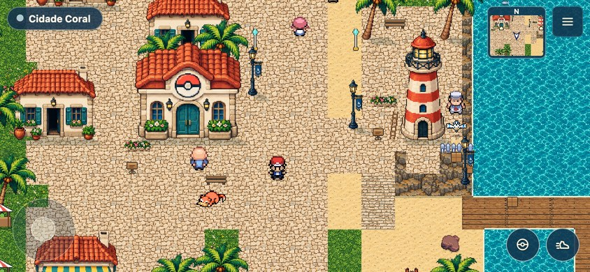
Implementação jogável — câmera fixa, atlas separados e colisão real.O teste está restrito a Coral. As outras cidades e os interiores mantêm a apresentação anterior. As batalhas continuam em tempo real; encontros comuns de Coral usam uma praia separada com retorno ao ponto de exploração.
Personagens e cidade na mesma escala
Treinador e moradores usam agora os sprites prontos do acervo FRLG/HGSS que já aparece no 3D. Pescadores e marinheiros têm aparência própria; escala e pés foram alinhados ao chão. As cores do jogador continuam ligadas ao criador. Comparar os personagens em movimento →
Passeio pela cidade
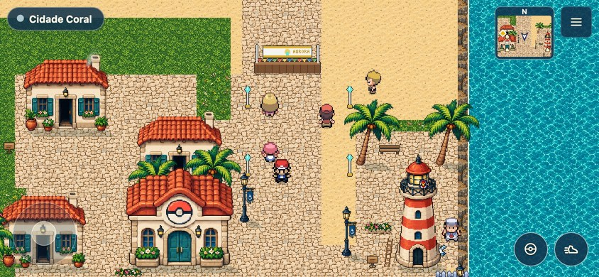
Praça e serviços; o palco e os pontos de roteiro mantêm seus identificadores.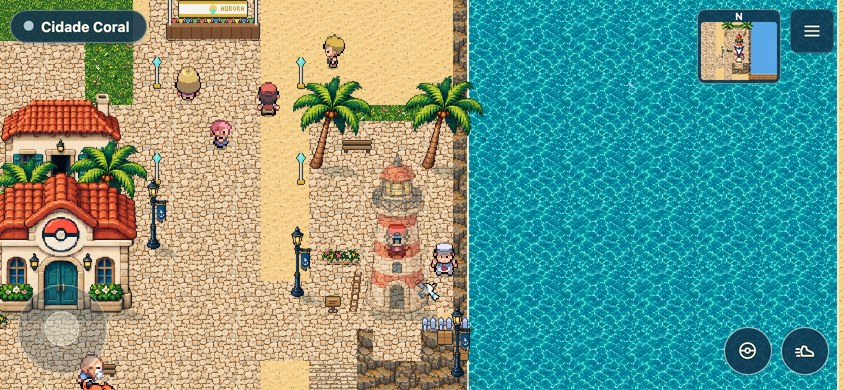
Farol com entrada funcional e acesso livre pela orla.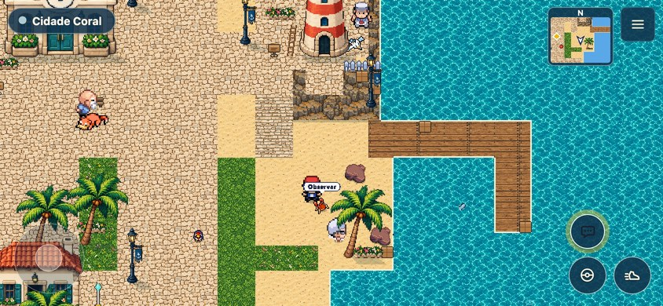
Praia, escadaria e passadiço do bairro. O porto regional mantém suas viagens.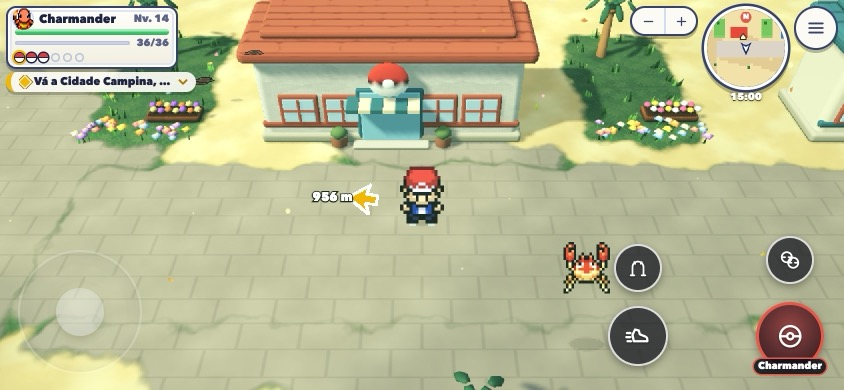
Piloto anterior em 3D — registro histórico, de outro enquadramento.Encontro em uma cena própria
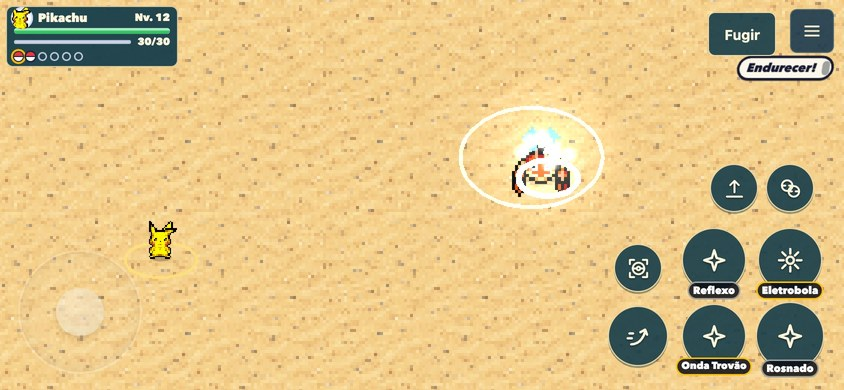
Selvagem: um adversário, sem barra de treinador no topo.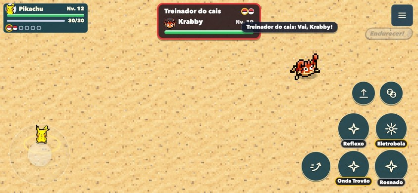
Treinador: troca de Pokémon contínua, sem recarregar a cena.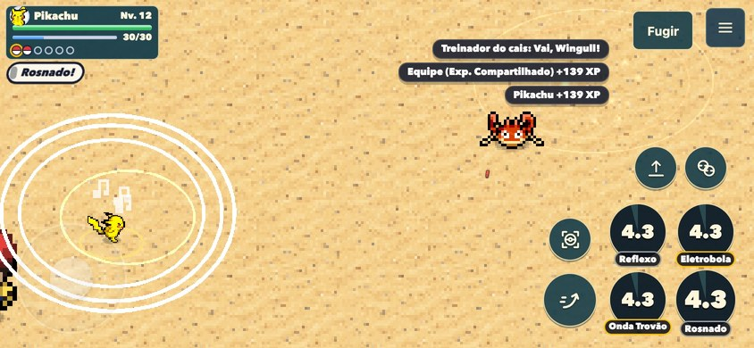
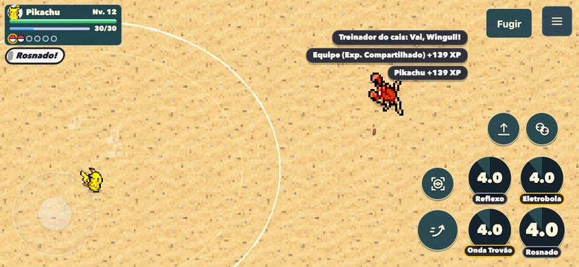
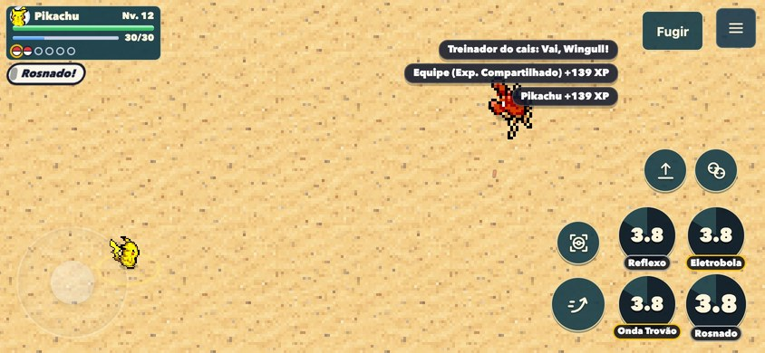
Comparar os dois desenhos na mesma planta
Para isolar o custo do desenho, os dois modos usam o bairro reorganizado e os mesmos pontos. O “antes” desta medição é o renderer 3D, não uma restauração do mapa antigo.
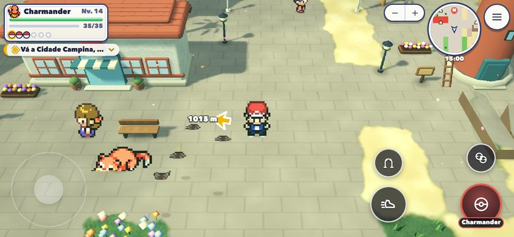
Renderer 3D anterior.Apresentação em pixel art.Validação em Chrome sem interface, viewport 844×390, DPR 2. Teste físico no iPhone/Safari e aprovação da direção visual continuam pendentes. Branch local coral-pixel-art; sem publicação.